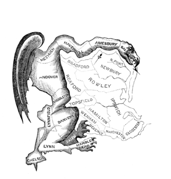

Gerrymandering
an Explorable Explaination
by Sneha Kamath & Stephen Holmes
Gerrymandering
Gerrymandering, in U.S. politics, is drawing the boundaries of electoral districts in a way that gives one party an unfair advantage over its rivals.
Gerrymandering creates an imbalance of elected representatives.
The term was named after Governor Elbridge Gerry of Massachusetts, whose administration enacted a law in 1812 defining new state senatorial districts.
What is the current state of gerrymandering?


Measuring Gerrymanders
Coast lines, geography, and unusual shaped boundaries affect compactness. There are over 30 different methods to measure districts. Average compactness scores by state using four different models are displayed in the line chart below.
Maryland has the lowest compactness scores in three out of the four methods.
The Evolution of Maryland's 3rd congressional district
Maryland's 3rd district is considered one of the most gerrymandered districts in the country. Over the years, the district's shape has evolved to the usual shape it is today.
Solution
District boundaries as per 2010 census data. Maryland being one of the least compacted states has been especially prone to outrageously shaped district boundaries. Click on the button below to view district shapes created by the algorithm.
Brian Olson's algorithm redesigns boundaries to create 'optimally compact' district boundaries. His solution relies on census blocks and lowest average distance to the geographic center of each district to ensure compactness in district shapes.
References
Azavea. “Glossary.” Redistricting the Nation - FAQ - Who Draws the Lines, www.redistrictingthenation.com/glossary.aspx#compactness.
Britannica, The Editors of Encyclopaedia. “Gerrymandering.” Encyclopædia Britannica, Encyclopædia Britannica, Inc., 5 Nov. 2014, www.britannica.com/topic/gerrymandering.
Bycoffe, Aaron, et.al. “The Atlas Of Redistricting.” FiveThirtyEight, 25 Jan. 2018, projects.fivethirtyeight.com/redistricting-maps/.
Cagle, Daryl. “Gerrymandering.” Gerrymandering, 27 Mar. 2017, www.cagle.com/daryl-cagle/2017/03/gerrymandering.
Ingraham, Christopher. “This Computer Programmer Solved Gerrymandering in His Spare Time.” The Washington Post, WP Company, 3 June 2014, www.washingtonpost.com/news/wonk/wp/2014/06/03/this-computer-programmer-solved-gerrymandering-in-his-spare-time/?utm_term=.d31209b1392d.
Margolin, Jamie. “It's Time To Ban Congressional Gerrymandering.” The Huffington Post, TheHuffingtonPost.com, 26 May 2017, www.huffingtonpost.com/entry/congressional-gerrymandering-should-be-banned-in-the_us_59284095e4b0a7b7b469c9c8.
McCoy, Glenn. “Gerrymandering Political Cartoons.” low.onvacations.co/gerrymandering-political-cartoons/.
Tisdale, Elkanah. “The Gerry-Mander.” Boston Gazette, 1812.
Additional Resources Used
“Congressional District Boundaries” -- Geojson files: JeffreyBLewis, https://github.com/JeffreyBLewis/congressional-district-boundaries
Compactness data: Azavea, “Redrawing the Map on Redistricting, 2012, addendum”.
Template from w3.css